My Experience
- Product leader with 5 years of product experience working at intersection of AEC and tech. Focused on improving how homes are designed, documented and built. Licensed architect with 7+ years of experience leading design teams and delivering complex projects.
- Technologist who loves exploring new tools and workflows, especially generative AI (past 2 years).
- Fun Fact: filmed and produced a documentary on informal settlements in South America (withinformalcities.org)
What Drives Me
- Excited by opportunities to improve the built environment. If we can improve new production housing by just 2% the net impact at scale would be tremendous.
- As product leader and architect I love envisioning the unseen, pulling together multiple stakeholders, and executing on a product vision.

Higharc
- Platform for Production Builders to Design, Estimate, Sell, and Build single-family homes
- Our connected data ensures changes ripple across all products and downstream outputs.
- Leverage automation and rules to reduce product development time and help builders manage complex systems
My Role
- Product Lead for Building Generation Squad and Studio Product.
- Focused on building the core building model and API that all of our downstream platforms utilize.
- Hired as employee 26 (now 170+!)

- Multiple active customers pursuing townhomes in Higharc today—hitting significant limitations
- Unlocks ~$20M ARR in existing sales pipeline
- Opens the door to builders currently blocked without townhome support—massive TAM and gateway to larger builders
- Platform leverage: capabilities built for townhomes strengthen the foundation for all building types
 Rendering for active customer building townhomes with Higharc today
Rendering for active customer building townhomes with Higharc today
1. Core Building Model Improvements
Expand Higharc's modeling capacity to support complex tectonics and geometric conditions
- Datums + Levels
- Walls
- Foundations
2. Modeling Components / Units
Introduce a method of templatizing geometry such that it can be easily recycled and positioned across a builder's portfolio
- Modeling Components
- Reporting Units
- Unit Options
3. Dedicated Builder Portal and Sales Experience
Introduce unique workflows for multi-unit typologies that can eventually scale to support additional project types.
- Dedicated Townhome Workflow
- Specialized Sales Views

Context
- Higharc Studio is our webhosted BIM modeling application. We've optimized for automated workflows and SFH typologies, but need to expand our capabilities to serve more complex building typologies.
Problem
- Higharc lacks user-defined, absolute datums. All datums were relative to one another or hosted to parent levels.
- Levels stack automatically on top of one another. Users can't associate a level with a specific datum, and can't separate the top of one floor from the bottom of the next.
Solution
- We introduced Origin-relative datums. These are horizontal reference planes that users can lock other geometric objects to, including levels, floors, and walls. This gives users much more control.
- We also introduced new level behavior such that levels could be set to specific datums instead of always "stacking" on top of one another. This has unlocked future support for Split-level typologies, Stepped townhome units, and buildings that have complex relationships with grade including multiple foundation or basement levels.

Context
- Higharc supports centralized management of settings and rules, but has limited abilities to centralize groups of geometry.
Problem
- Townhomes are often designed as repeatable units that can be swapped in and out. Higharc has no way to centrally save chunks of geometry that can be referenced and placed in downstream files.
- Users need to centrally save groups of geometry that can be utilized over and over again across multiple files.
- Stepped units are unsupported, and builders painstakingly hack drawings in AutoCAD or Photoshop to workaround the problem.
Solution
- We introduced Centralized Modeling Components that allow users to save collections of geometries and deploy them across their portfolio.
- Once placed, a model component instance can be effortlessly repositioned in x, y, or z directions, accounting for variations in topography and site conditions.
- Modeling components can be nested, supporting deep levels of centralization and automation previously unimaginable. For an organized and templated builder, this opens up an entirely different approach to product development.


1 / 2
Context
- Config is Higharc's builder-facing community and option configuration product.
- Here, builders create and manage locations, and enable options per location hierarchy.
Problem
- Today, Config only supports SFHs on individual lots.
- Builders want to centrally manage options and require a dedicated workflow to enable or lock options per building, or per individual unit.
- The solution should be as tightly scoped as possible and work with existing patterns and concepts.
Solution
- Introduce a new level in the location hierarchy: "Building"
- Buildings contain individual units/lots and allow builders to manage options at the building or individual unit level.
- The feature is light touch, and sets us up for future broader investments in the Config product.
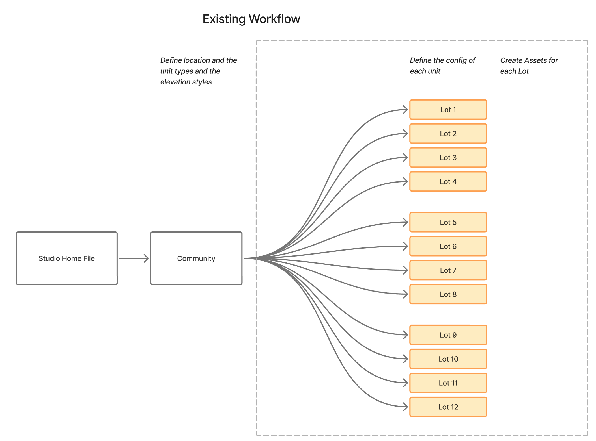
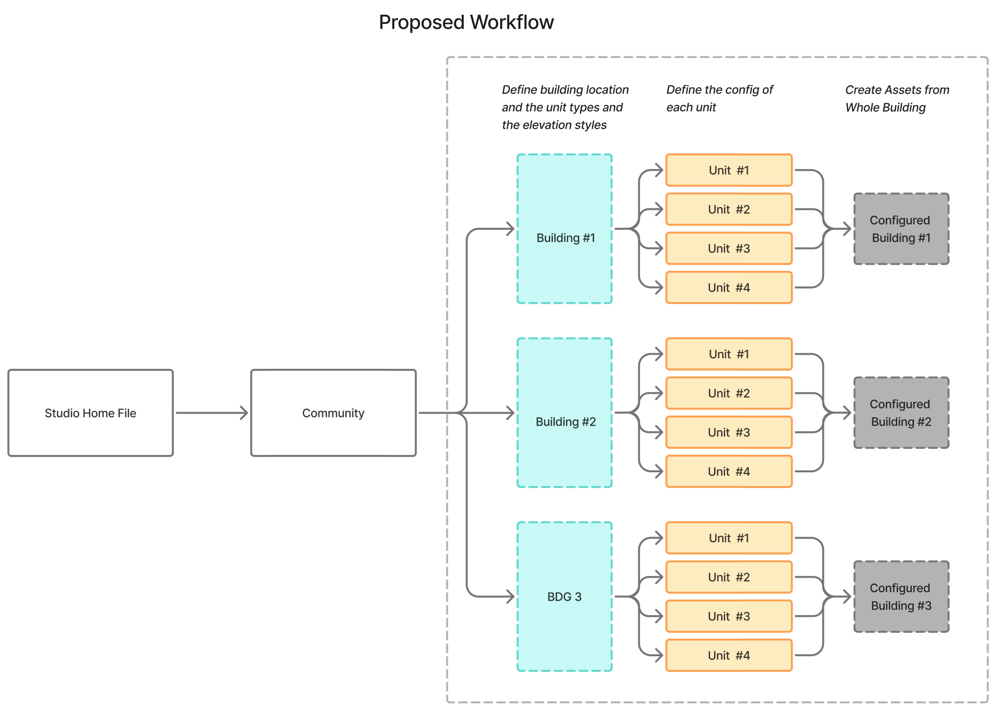
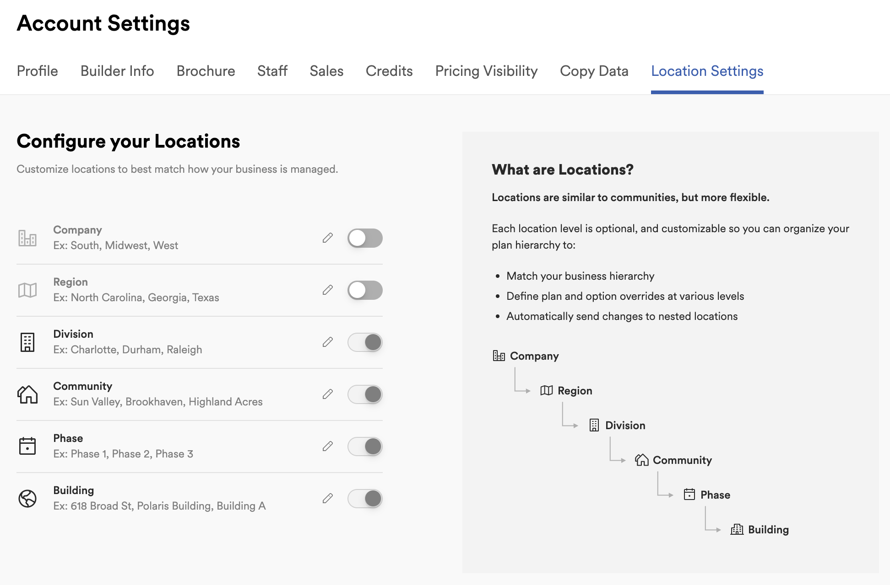
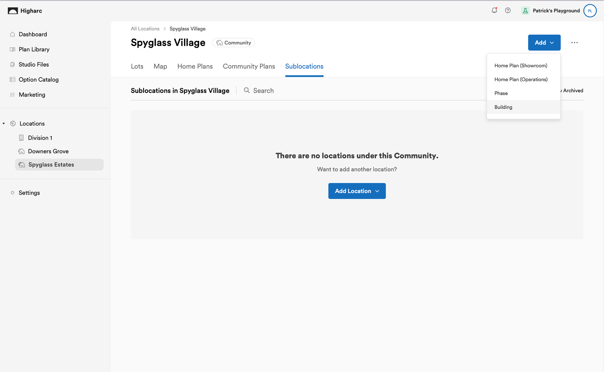

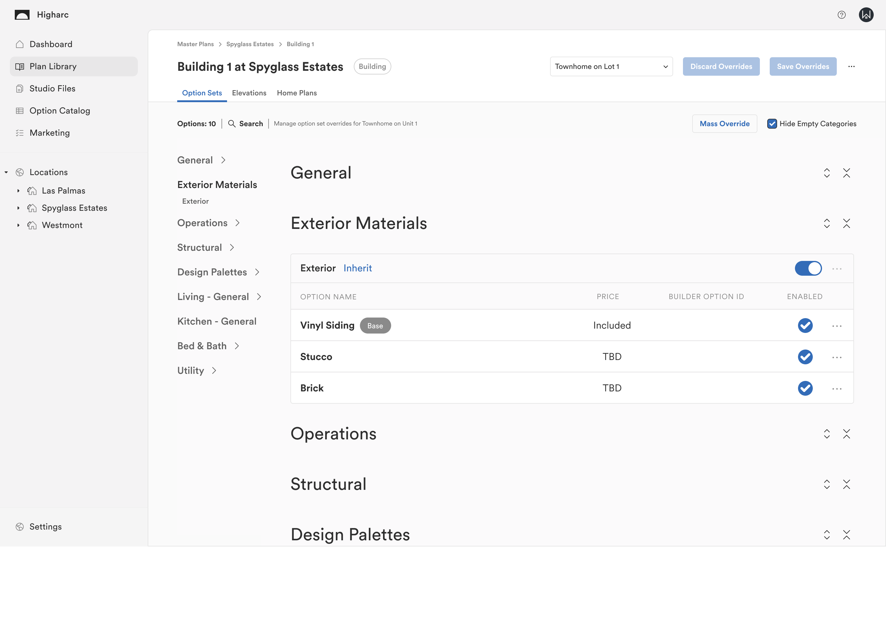
1 / 5
Context
- Showroom is Higharc's buyer-facing sales product.
- Here, buyers can select from available options, save configurations, and print brochures.
Problem
- Users want to focus on their unit while understanding the context
- Higharc doesn't highlight one unit while obscuring neighboring units.
Solution
- We introduced a dedicated multi-unit experience for our Showroom product.
- Buyers can select their unit from a community map, visualize their particular unit, and make appropriate selections to customize their home.
- Selections from individual units are rolled up and saved on the building, so builders can create permit drawings and get material takeoffs on a per unit or whole-building level.
%20Page%20001.png)
%20Page%20002.png)
%20Page%20003.png)
%20Page%20004.png)
%20Page%20005.png)
%20Page%20006.png)
%20Page%20007.png)
%20Page%20008.png)
%20Page%20009.png)
%20Page%20010.png)
%20Page%20011.png)
%20Page%20012.png)
%20Page%20013.png)
%20Page%20014.png)
%20Page%20016.png)
%20Page%20017.png)
1 / 16
- Defined success for standalone projects and broader townhome workflow
- Target incremental delivery and investment to ensure we're not over investing
- Specific targets to support Interest, Adoption, Production, Performance, and Revenue

Success Criteria:
2/17 - IBS Conference
20+ Qualified booth Conversations
10+ High intent follow-ups booked
6+ Inbound Beta Interest / Sign ups
April - Beta Launch
10+ customer accounts enabled with Feature Flagged Townhomes by 4/30
50%+ beta customers participate in training sessions
>50% of enabled accounts complete Beta Feature Activity within 14 days
Collect >20 actionable feedback items from 4+ beta customers by 5/15
July 1st - GA Milestone
Feature Flags removed, content broadly accessible
10+ Customers with activation, 5+ actively using for production
Within 30 days of GA, >60% of townhome builders have >1 Project
Quality bar: Blocker bug or FR count ≤3 in first 30 days
Q2 Sales Goals
$5M net new ARR from Townhomes specific Builders
$XXM pipeline growth in Q2
Interest
Adoption
Production
Performance
Revenue
Current Focus
- Pushing team to deliver exceptional demo experience for 2/17 tradeshow
- Content creation and coordination with PMM, Sales and Marketing
- Q2 and Q3 roadmapping - anticipating growth and prioritization shifts
Next Up
- Preparing for final big effort before Beta Phase (April)
- Design and usability reviews to polish rough workflows
- Feedback and progress check-ins with internal users and existing customers
- Anticipating Townhome workflow GA for all customers June/July
Risks
- We hit MVP but fail to deliver exceptional working product
- Eng Staffing constraints force us to prioritize other initiatives
- Fail to provide proper guardrails and training guidance, limiting adoption
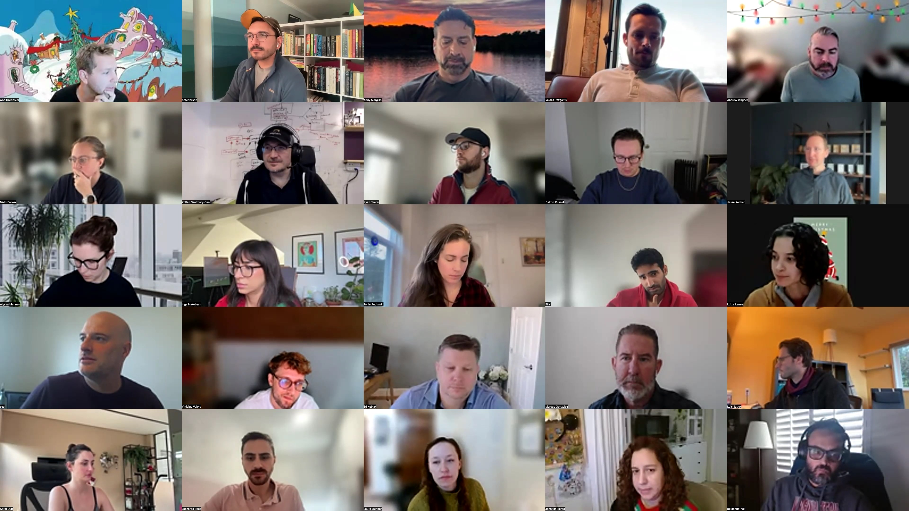
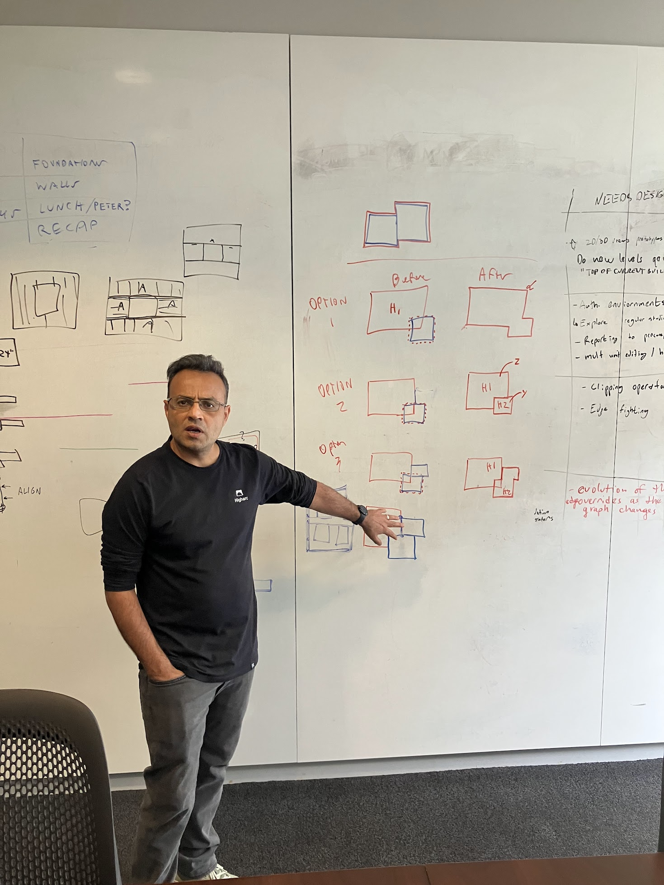
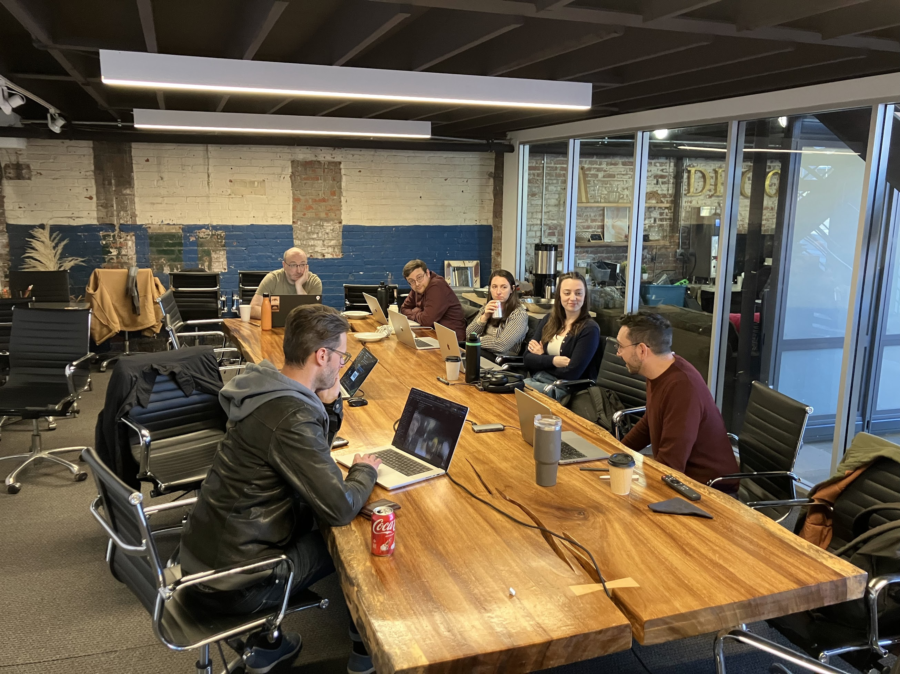
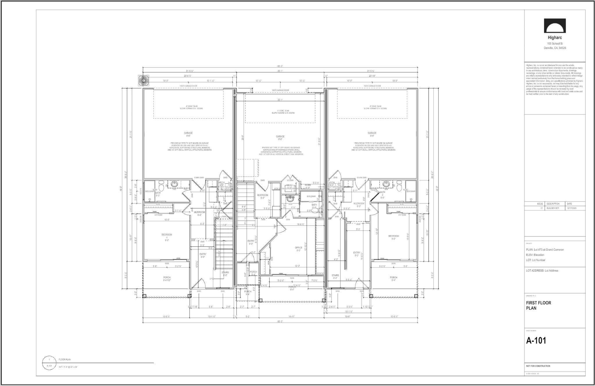
 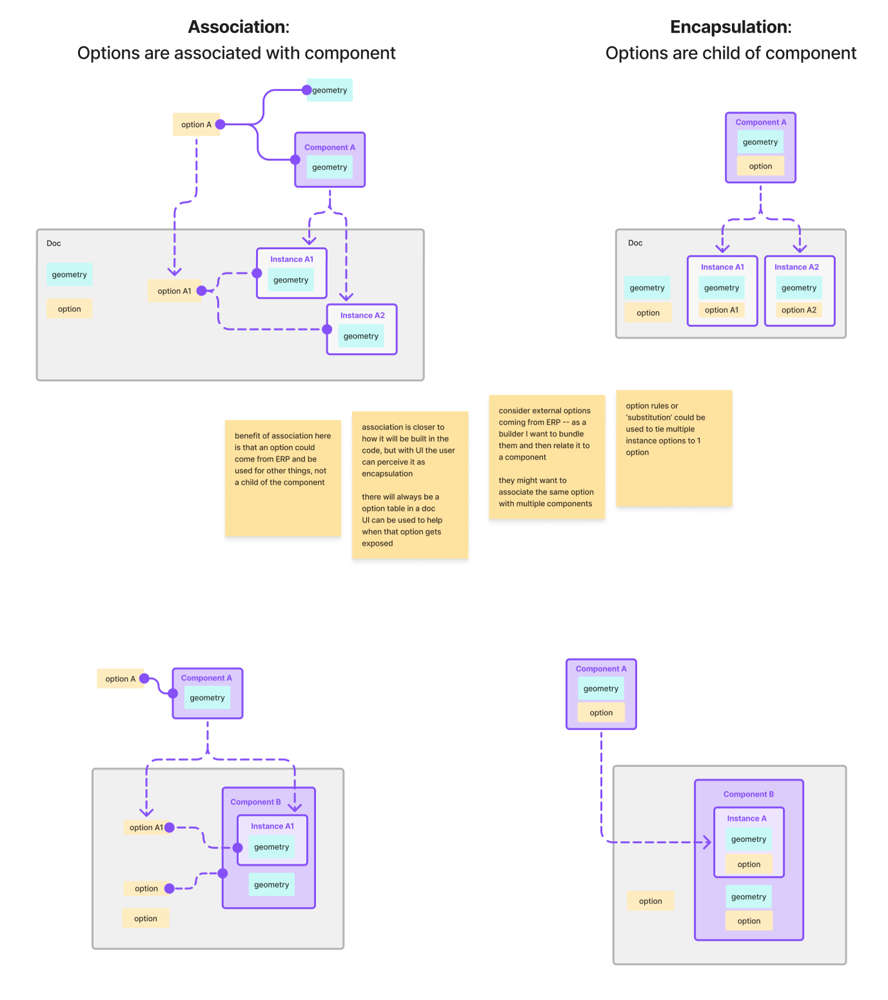
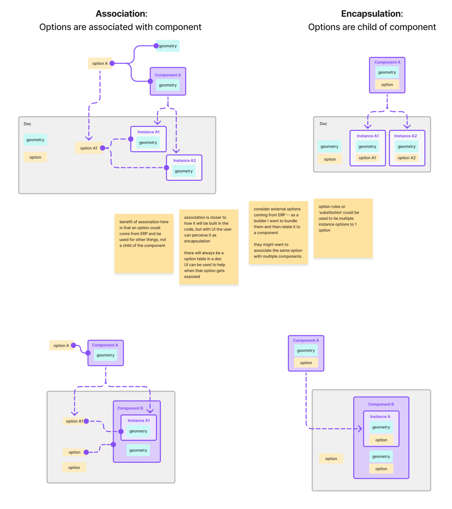
 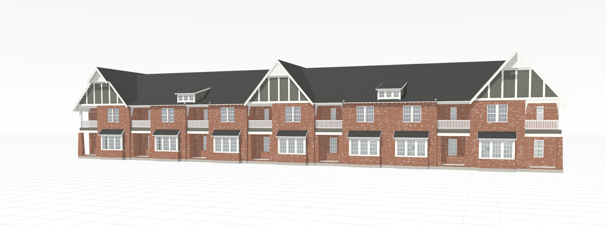
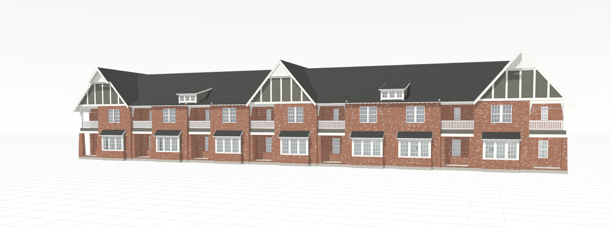

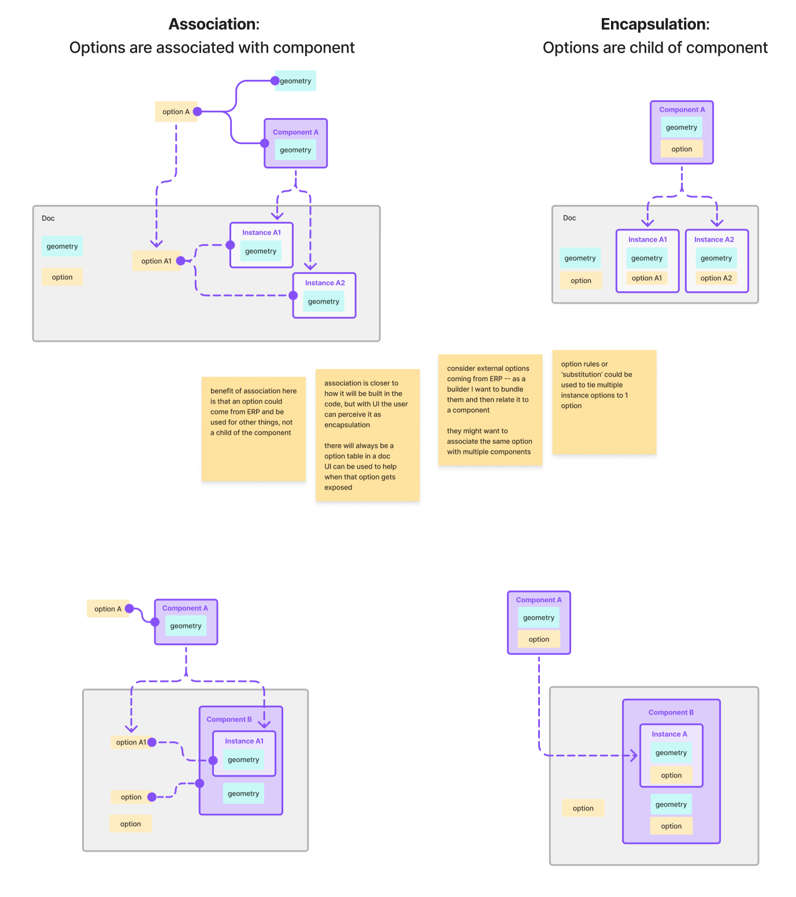
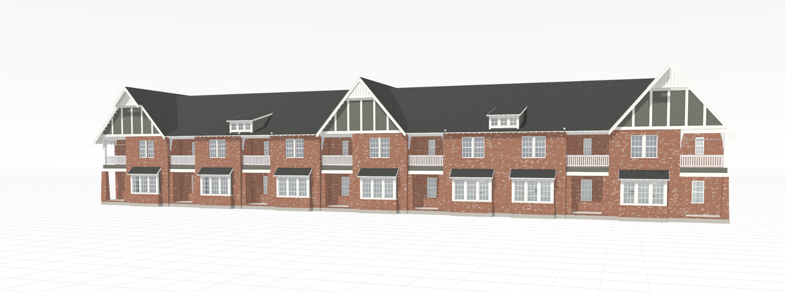